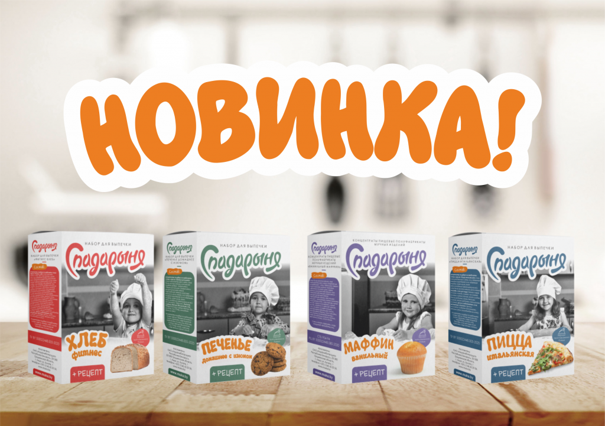

Новинка в ассортименте! Полуфабрикаты мучных изделий «Спадарыня» – это сбалансированное, быстрое и вкусное питание для всей семьи,
которое под силу любой хозяйке . Ассортимент серии включает: наборы для выпечки «Пицца Итальянская», «Печенье домашнее с изюмом»,
«Фитнес хлеб», концентраты пищевые полуфабрикаты мучных изделий «Ванильный маффин».
Полуфабрикаты мучных изделий «Спадарыня» обладают рядом преимуществ:
Готовая мучная смесь «Спадарыня» поможет Вам превратить изнурительный марафон ежедневных кухонных хлопот в легкий триумфальный
спринт. Теперь Вы можете приготовить любимое блюда на «Раз-два-три!»
